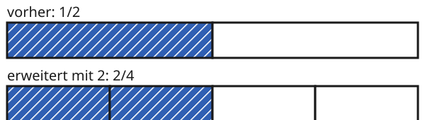

Gleichwertige Brüche und Erweitern
Mit einem KI-Tutor lernen
Ein KI-Tutor erklärt dir diese Seite und hilft dir bei den Übungen. Wähl deinen Assistenten:
Mit Claude öffnen Mit ChatGPT öffnen Mit Mistral Vibe öffnen
Du nutzt dein eigenes Konto beim Anbieter. Der Assistent ist kein Angebot von lernapps.net: lernapps liefert nur Inhalte und Übungen. Die Wahl gilt für alle Seiten, nur auf diesem Gerät.
Einstieg
Du bekommst eine halbe Pizza. Dein Freund schneidet sie noch einmal in der Mitte durch, damit sie in den Backofen passt. Jetzt hast du zwei Stücke, vorher war es eins. Hast du jetzt mehr Pizza? Nein: Du hast genauso viel wie vorher. Es sind nur mehr und kleinere Stücke.
So ist es auch bei Brüchen: Derselbe Anteil kann mit verschiedenen Brüchen beschrieben werden.
Anschaulich erklärt
Oben siehst du den Streifen mit . Unten ist jeder Teil in 2 kleinere Teile geteilt. Das Ganze ist beide Male der ganze Streifen. Die blaue Länge bleibt gleich. Nur die Zahl der Teile ist anders: Jetzt sind 4 Teile im Ganzen und 2 davon blau.

Vergleiche, wie weit das Blau jeweils reicht. Zähle dann die Teile.
Quelle: eigene Zeichnung. Lizenz: CC-BY-4.0.Jeder Teil wurde in 2 Teile geteilt. Darum gibt es doppelt so viele Teile im Ganzen: Der Nenner wird mit 2 multipliziert. Und es gibt doppelt so viele blaue Teile: Der Zähler wird auch mit 2 multipliziert.
Dieses Teilen heißt Erweitern. Die Brüche und beschreiben denselben Anteil. Man nennt sie gleichwertig.
Ausprobieren
Oben steht der Bruch . Unter „Erweitern mit“ wählst du eine Zahl. Zu Beginn steht dort die 1: Der Streifen unten ist gleich dem oberen. Wähle jetzt eine andere Zahl und vergleiche die beiden Streifen. Wie weit reicht das Blau? Wie viele Teile gibt es? Was passiert mit Zähler und Nenner?
vorher: 3/4
erweitert mit 1: 3/4
Oben steht ein Streifen für den Bruch 3/4. Du wählst eine Zahl von 1 bis 5 und erweiterst damit. Unten steht derselbe Streifen, jeder Teil in so viele kleinere Teile geteilt. Die blaue Länge bleibt gleich. Beispiele: mit 2 wird aus 3/4 der Bruch 6/8, mit 3 wird es 9/12, mit 5 wird es 15/20.
Merke
- Erweitern
Einen Bruch erweitern heißt: Zähler und Nenner mit derselben Zahl multiplizieren. Jeder Teil wird in gleich viele kleinere Teile geteilt.
- gleichwertig
Zwei Brüche sind gleichwertig, wenn sie denselben Anteil vom Ganzen beschreiben.
Dabei ist der Zähler, der Nenner und die Zahl, mit der du erweiterst.
Wichtig
Beim Erweitern wird multipliziert, nicht addiert, und es werden beide Zahlen mit derselben Zahl multipliziert. Der Anteil ändert sich nicht, nur die Einteilung.
Zwei Drittel erweitern
Erweitere mit 4.
| Zähler | 2 · 4 = 8 |
|---|---|
| Nenner | 3 · 4 = 12 |
| Ergebnis |
Übung
Übung
Drei Beispielaufgaben, jede mit ihrer Lösung:
Aufgabe Nr. 1
Erweitere den Bruch 1/4 mit 3. Wie heißt der neue Zähler? Gib nur die Zahl ein.
Tipp
Jeder blaue Teil wird in so viele kleinere Teile geteilt, wie die Zahl sagt, mit der du erweiterst.
Lösung
- Erweitern heißt: Zähler und Nenner mit derselben Zahl multiplizieren, hier mit 3.
- Der Zähler 1 mal 3 ist 3.
Richtige Antwort: 3
Aufgabe Nr. 2
Erweitere den Bruch 1/6 mit 4. Wie heißt der neue Zähler? Gib nur die Zahl ein.
Tipp
Jeder blaue Teil wird in so viele kleinere Teile geteilt, wie die Zahl sagt, mit der du erweiterst.
Lösung
- Erweitern heißt: Zähler und Nenner mit derselben Zahl multiplizieren, hier mit 4.
- Der Zähler 1 mal 4 ist 4.
Richtige Antwort: 4
Aufgabe Nr. 3
Erweitere den Bruch 3/5 mit 3. Wie heißt der neue Zähler? Gib nur die Zahl ein.
Tipp
Jeder blaue Teil wird in so viele kleinere Teile geteilt, wie die Zahl sagt, mit der du erweiterst.
Lösung
- Erweitern heißt: Zähler und Nenner mit derselben Zahl multiplizieren, hier mit 3.
- Der Zähler 3 mal 3 ist 9.
Richtige Antwort: 9
Übung
Drei Beispielaufgaben, jede mit ihrer Lösung:
Aufgabe Nr. 1
Erweitere den Bruch 2/7 mit 3. Wie heißt der neue Nenner? Gib nur die Zahl ein.
Tipp
Der Nenner sagt, in wie viele Teile das Ganze geteilt ist. Jeder Teil wird in so viele kleinere Teile geteilt, wie die Zahl sagt, mit der du erweiterst.
Lösung
- Erweitern heißt: Zähler und Nenner mit derselben Zahl multiplizieren, hier mit 3.
- Der Nenner 7 mal 3 ist 21.
Richtige Antwort: 21
Aufgabe Nr. 2
Erweitere den Bruch 3/10 mit 5. Wie heißt der neue Nenner? Gib nur die Zahl ein.
Tipp
Der Nenner sagt, in wie viele Teile das Ganze geteilt ist. Jeder Teil wird in so viele kleinere Teile geteilt, wie die Zahl sagt, mit der du erweiterst.
Lösung
- Erweitern heißt: Zähler und Nenner mit derselben Zahl multiplizieren, hier mit 5.
- Der Nenner 10 mal 5 ist 50.
Richtige Antwort: 50
Aufgabe Nr. 3
Erweitere den Bruch 7/10 mit 3. Wie heißt der neue Nenner? Gib nur die Zahl ein.
Tipp
Der Nenner sagt, in wie viele Teile das Ganze geteilt ist. Jeder Teil wird in so viele kleinere Teile geteilt, wie die Zahl sagt, mit der du erweiterst.
Lösung
- Erweitern heißt: Zähler und Nenner mit derselben Zahl multiplizieren, hier mit 3.
- Der Nenner 10 mal 3 ist 30.
Richtige Antwort: 30
Übung
Lösung
4/6 richtige Antwort
Hier sind Zähler und Nenner mit 2 multipliziert worden, 2 · 2 = 4 und 3 · 2 = 6. Das ist Erweitern.
4/5
Hier wurde bei beiden Zahlen 2 addiert. Beim Erweitern wird aber multipliziert, sonst ändert sich der Anteil.
2/6
Nur der Nenner wurde verändert. Dann gibt es mehr Teile im Ganzen, aber gleich viele blaue Teile, und der Anteil wird kleiner.
3/4
Hier wurde bei beiden Zahlen 1 addiert. Das sind andere Teile und ein anderer Anteil, kein erweiterter Bruch.
Gleichwertige Brüche entstehen, wenn du Zähler und Nenner mit derselben Zahl multiplizierst.
Mehr dazu:
Übung
Lösung
Richtige Antwort: Die Aussage stimmt nicht.
Beim Erweitern wird jeder Teil in kleinere Teile geteilt. Es gibt mehr Teile, aber jeder ist kleiner. Der Anteil bleibt gleich.
Mehr dazu: